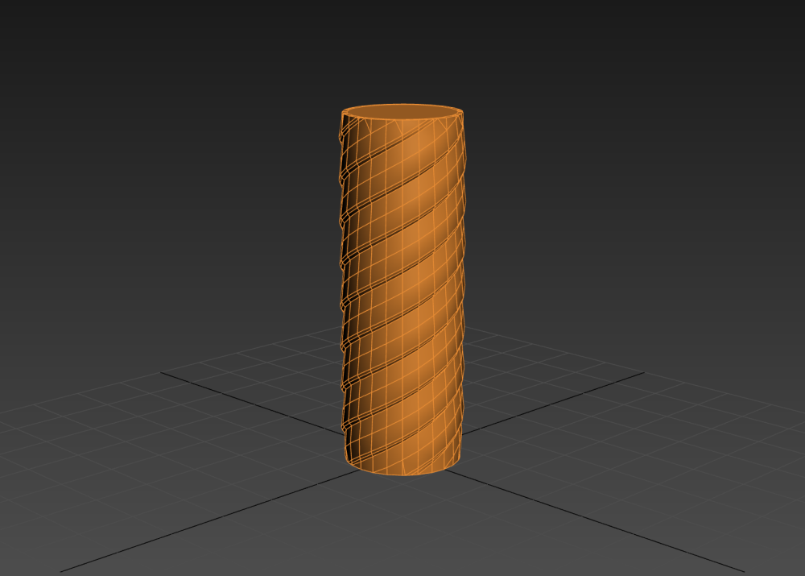

Tools / Spiral 9000
Spiral 9000
Straps, screw threads and knurls round a tube, from selected edges.
What it does
Spiral 9000 rebuilds a band of selected lengthwise edges as diagonal lines. On a closed ring, such as a cylinder, the lines run round as a seamless spiral. On an open strip you get parallel slanted lines. It works on Editable Poly only.

How to use it
- Select an Editable Poly and go to edge level. Select the lengthwise edges of the band, for example the vertical edges of a cylinder.
- Right-click and choose Spiral9000 (below the LoopTools9000 submenu). It only shows at edge level on an Editable Poly.
- Press Get Selection to read the selected edges. Press it again after you change the selection.
- Choose a mode, optionally a preset, and set the options. With Show Preview on, the result updates while you adjust.
- Press Apply. It is one undo step, and the new lines end up selected.
Options
Modes
| Mode | What it makes |
|---|---|
| Wrap | Overlapping straps, like tape wound round a handle. |
| Thread | A screw thread cut into the surface, or raised from it. With Cross it makes a diamond knurl. |
| Line | Only the new spiral lines, flat. |
Lines (all modes)
| Option | What it does |
|---|---|
| Angle | Slope of the lines in degrees. Low is nearly flat rings, high is steep. |
| Right / Left | Twist direction. |
| Spacing | Strap width. On a closed tube it adjusts so the straps meet without a seam. |
| Offset | Slides all lines along the tube. |
| Bias | Crowds the lines toward one end. |
| Cross | A second set of lines the other way. In Wrap the straps weave over and under each other. |
Thread
| Option | What it does |
|---|---|
| Pitch | Distance from one thread to the next. |
| Starts | Number of threads side by side. |
| Depth | How deep the thread is cut, or how high it stands. |
| Raised | Off cuts into the surface. On makes it stand out. |
| Crest % / Root % | Flat top and flat bottom of the thread, as a share of the pitch. |
| Runout | The thread fades out smoothly over this length at both ends. |
Wrap
| Option | What it does |
|---|---|
| Thickness | Height of each strap's raised edge. |
| Lip % / Lip Segs | Width of the rounded edge, and how many loops it has. |
| Segs | Loops along the flat part of each strap. |
| Shrink / Auto Shrink | Pulls the wrap in to make up for the added thickness. |
| End Tabs | A flat band at both ends. Set its Height and its edge: Flat, Chamfer or Bead. |
| Weave | With Cross, how far a strap dips where it runs under another. |
Finish
| Option | What it does |
|---|---|
| Crease | Creases the strap borders (in Thread, every line) so subdivision keeps them sharp. |
| Smooth Surface | Places new points on the smooth curve through the columns so the result is round. Turn off for boxy shapes. |
| Cap Ring | Adds a ring of quads just inside each cap. |
| Strap UVs | Lays each strap out as one straight strip in UV channel 1. |
| IDs | Keep the object's material IDs, alternate between 1 and 2, or give every strap its own ID. |
| See-Through | Makes the preview transparent, to line it up with what is behind. |
Presets
Pick ready-made settings from the Preset list for the current mode. They scale to the tube's thickness. Save stores your own, Delete removes one of yours (marked with *).
Good to know
- Apply also stores the settings on the object. Select the same edges later and press Get Selection to load them back.
- Spiral installs a small plugin: restart 3ds Max once after the setup.
- It works on Editable Poly only, not on the Edit Poly modifier.